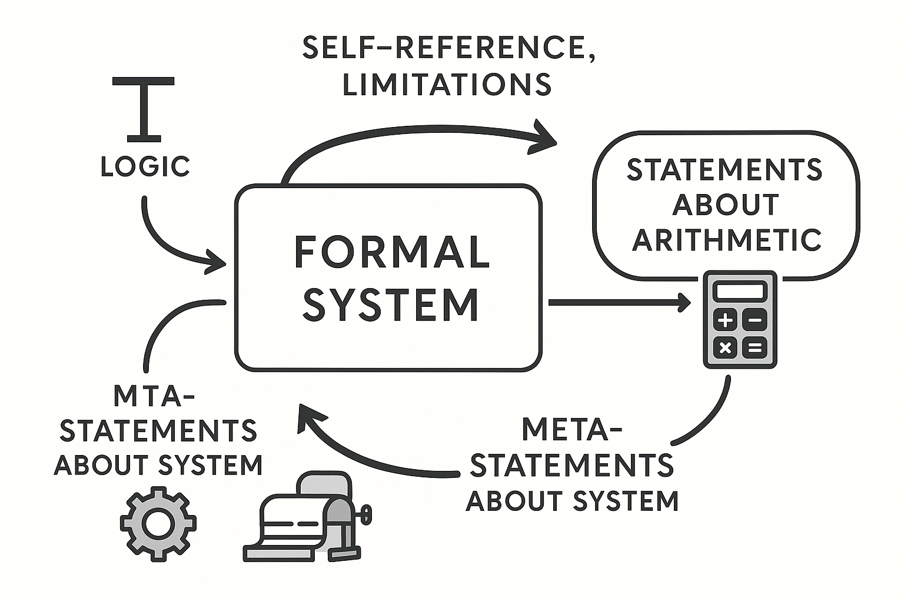
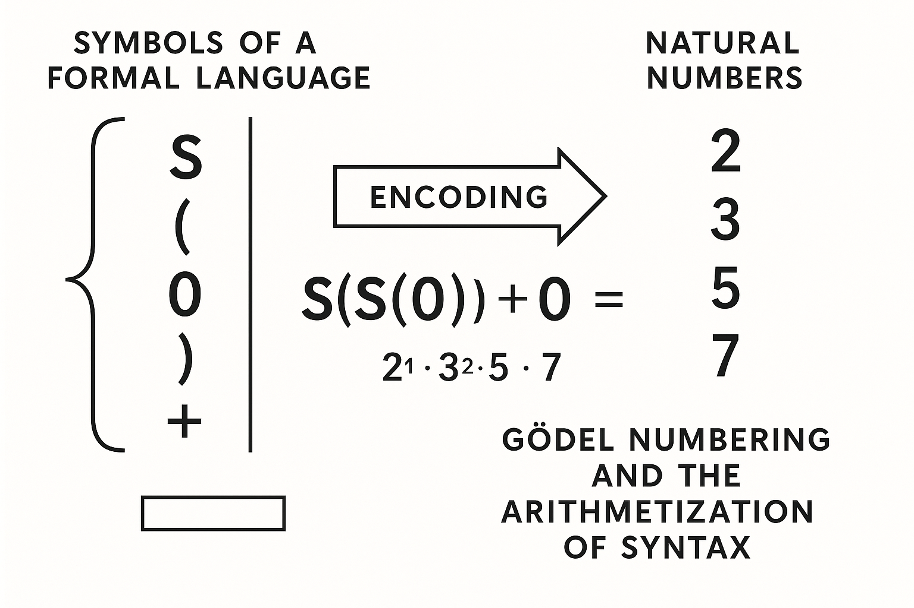
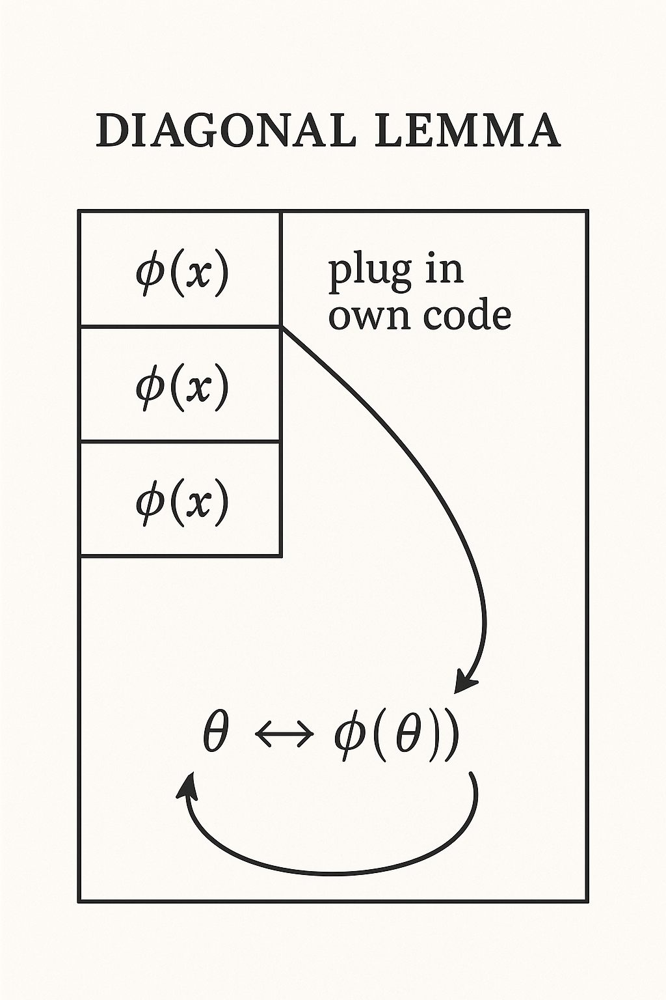
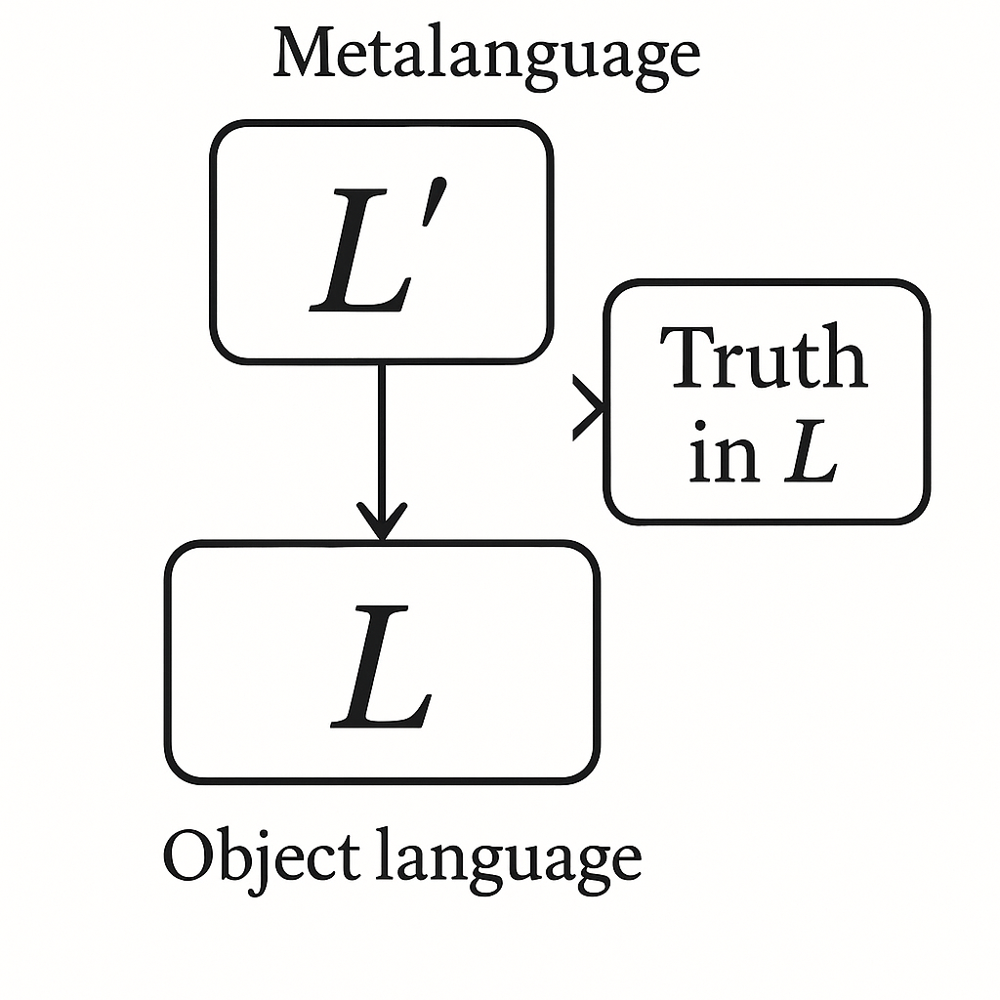
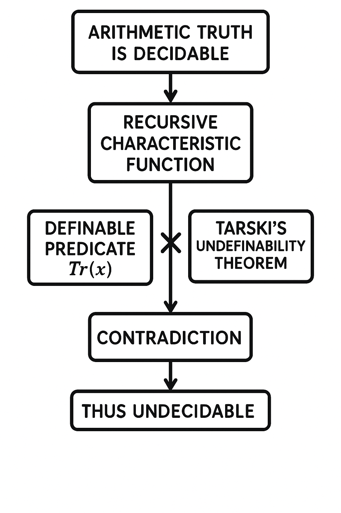
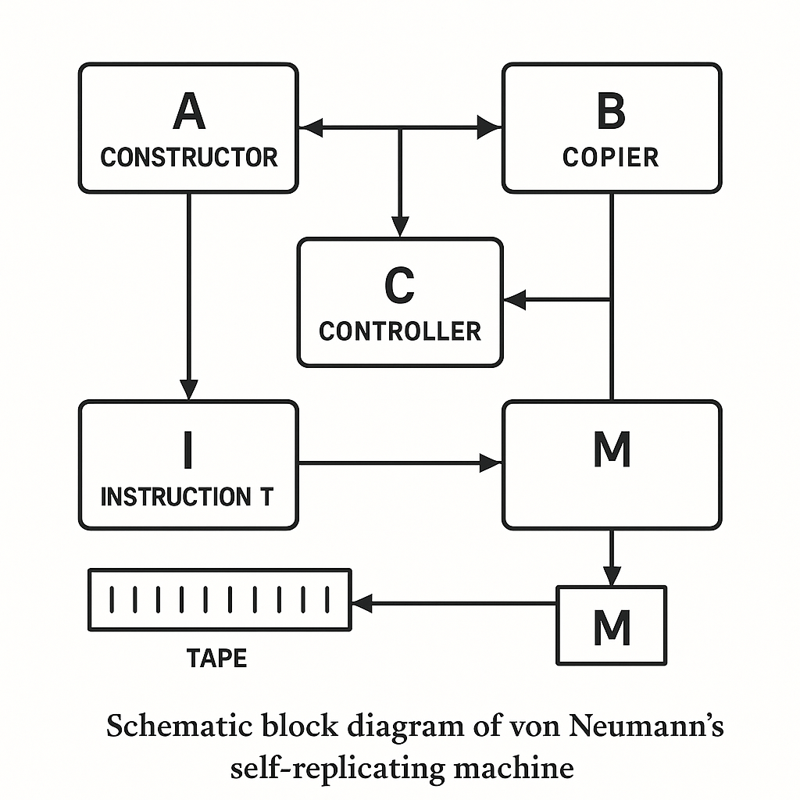
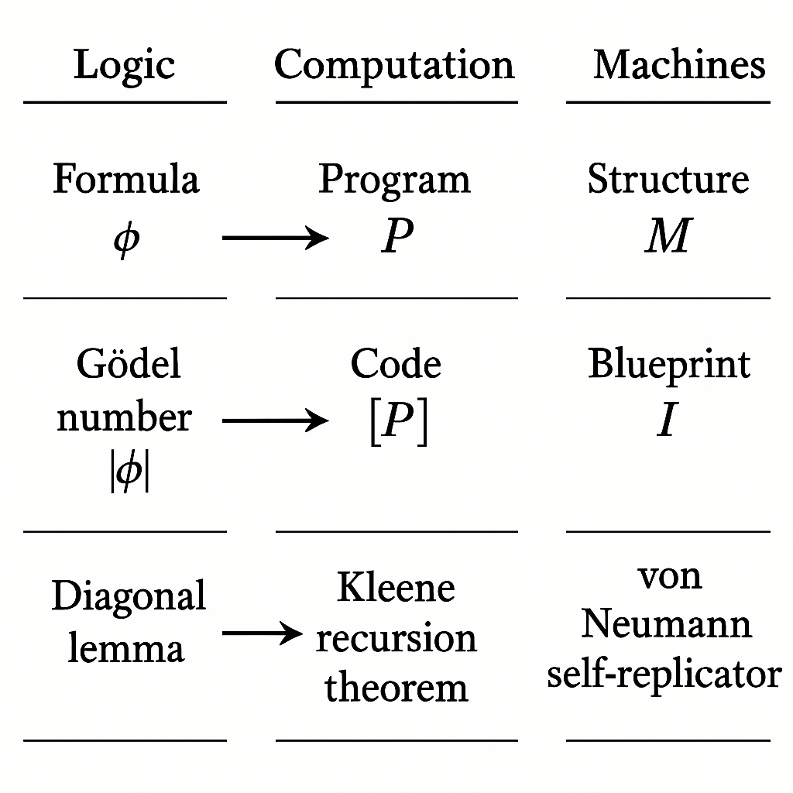
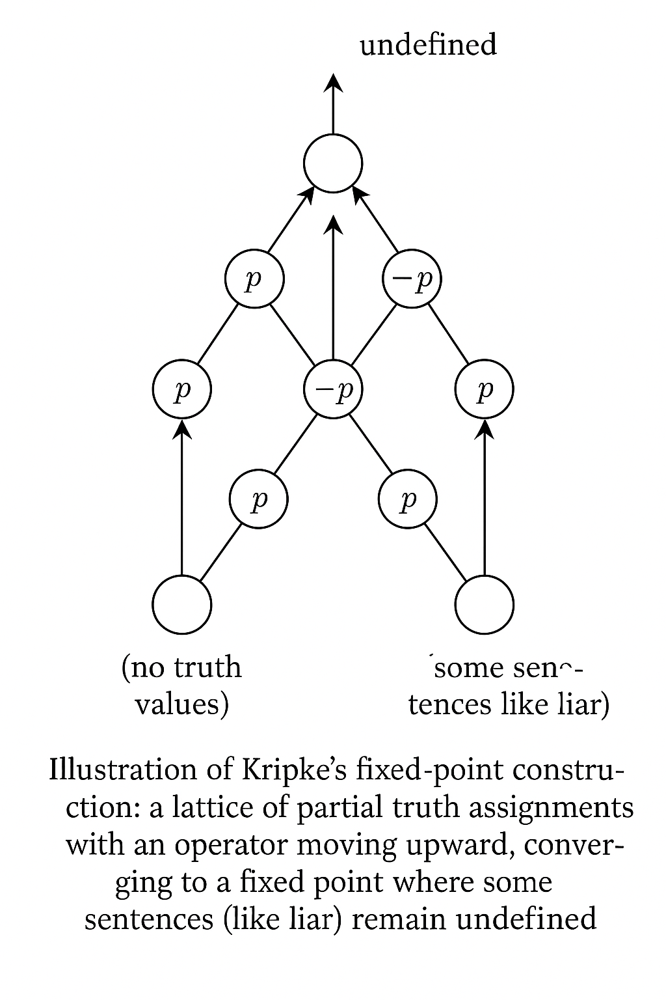
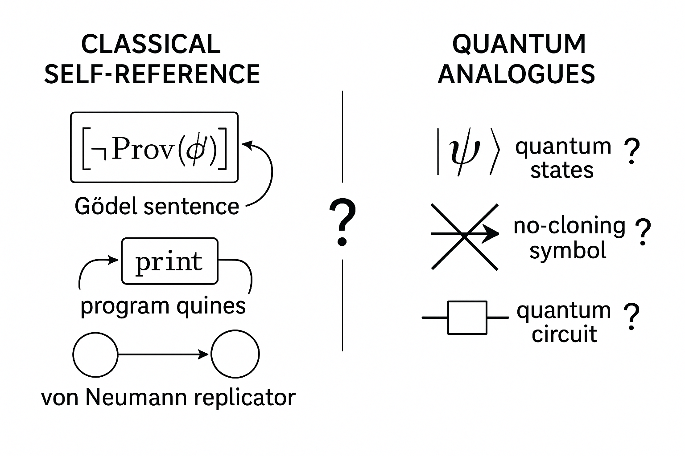

第 5 講：自指邏輯主題 5 —— 形式系統的「自我反省」與限制
本講聚焦於自指邏輯的一個核心主題：形式系統（特別是算術與集合論）究竟能在多大程度上「談論自己」？在哥德爾不完備性定理、塔斯基不可定義性定理與不可判定性定理，以及自複製結構（von Neumann machine）後，我們將進一步將這些理論線索整合到「形式系統自我反省能力」這一主題下，並討論當前在數理邏輯、計算理論與量子資訊中的發展。

圖 5-2: A conceptual diagram showing a formal system represented as a box, with arrows going out to statements about arithmetic, then looping back as 'meta-statements' about the system itself, illustrating self-reference and limitations (Gödel, Tarski, von Neumann) with icons for logic, computation, and machines.
Prompt: A conceptual diagram showing a formal system represented as a box, with arrows going out to statements about arithmetic, then looping back as 'meta-statements' about the system itself, illustrating self-reference and limitations (Gödel, Tarski, von Neumann) with icons for logic, computation, and machines.
5.1 形式系統「談論自己」：語法、語義與編碼
5.1.1 語法層與語義層的區分
在形式邏輯中，我們區分：
- 語法（syntax）：符號、公式、推導規則；可由機械程序檢查。
- 語義（semantics）：公式在某一解釋（例如自然數結構 \(\mathbb{N}\)）中的真值。
自指問題幾乎都源自於：我們嘗試在「物件語言（object language）」中，表達關於自身語句真假的陳述。這往往需要引入：
- 某種「真理謂詞」\( \mathrm{Tr}(x) \)，在物件語言中表示「編碼為 \(x\) 的公式為真」。
- 或是某種「證明謂詞」\( \mathrm{Pr}_T(x) \)，表示「在理論 \(T\) 中存在編碼為 \(x\) 的證明」。
塔斯基證明了：對於足夠強的理論（如 Peano 算術），真理謂詞 無法 由該理論本身所定義。哥德爾則告訴我們：證明謂詞可以被「部分」地內部化，但代價是產生不完備性。這一節先建立必要的技術基礎。
5.1.2 哥德爾編碼與語法的算術化
令 \( \mathcal{L} \) 為一個一階語言，例如 Peano 算術語言，符號包括：
- 常元：\(0\)
- 函數符號：\(S, +, \times\)
- 關係符號：\(=\)
- 邏輯符號與量詞、括號等。
哥德爾編碼（Gödel numbering）：將所有符號排成一個可數序列
\[
s_0, s_1, s_2, \dots,
\]
並定義編碼函數 \( \mathrm{gn}: \{\text{符號串}\} \to \mathbb{N} \)，例如：
- 令第 \(i\) 個質數為 \(p_i\)。
- 若字串為 \(s_{i_0} s_{i_1}\cdots s_{i_{k-1}}\)，則定義
\[
\mathrm{gn}(s_{i_0} s_{i_1}\cdots s_{i_{k-1}}) \;=\; p_0^{i_0+1} p_1^{i_1+1}\cdots p_{k-1}^{i_{k-1}+1}.
\]
這給每個公式、證明一個自然數編碼。重要性在於：
- 語法的性質（例如「是公式」、「是推理步驟合法」）可以用算術謂詞描述。
- 例如存在一個可計算謂詞 \( \mathrm{Form}(x) \)，在標準模型 \(\mathbb{N}\) 中表示「\(x\) 是某個 \(\mathcal{L}\)-公式的哥德爾數」。

圖 5-8: Diagram showing symbols of a formal language on the left, an encoding arrow to natural numbers on the right, with examples like "S(S(0))+0" mapping to a product of primes. This visually illustrates Gödel numbering and the arithmetization of syntax.
Prompt: Diagram showing symbols of a formal language on the left, an encoding arrow to natural numbers on the right, with examples like "S(S(0))+0" mapping to a product of primes. This visually illustrates Gödel numbering and the arithmetization of syntax.
定理（語法的算術化）：對於遞歸可枚舉的推理系統，其「證明關係」可以由一個可表示於 Peano 算術（或更弱）中的謂詞給出。也就是存在算術公式 \( \mathrm{Prf}_T(p, x) \) 使得在標準模型 \(\mathbb{N}\) 中：
\[
\mathrm{Prf}_T(p, x) \text{ 為真} \iff p \text{ 是公式 } x \text{ 在 } T \text{ 中的一個證明的編碼。}
\]
進一步定義「可證明性謂詞」
\[
\mathrm{Pr}_T(x) \;:=\; \exists p\, \mathrm{Prf}_T(p, x).
\]
這樣，形式系統 \(T\) 可在其自身語言中「談論自己的證明行為」，開啟了自指邏輯的大門。
5.2 自指與不動點：對角化引理的深化
5.2.1 對角化引理回顧與細化
對角化引理（Diagonal Lemma）是哥德爾不完備性與塔斯基不可定義性的共同核心。其標準陳述：
定理（對角化引理）：令 \(T\) 為一個可表示足夠多算術的理論，且 \(T\) 的語言中有一元謂詞變量位。對每一個公式 \( \varphi(x) \)（\(x\) 為唯一自由變數），存在一個句子 \( \theta \) 使得
\[
T \vdash \theta \leftrightarrow \varphi(\ulcorner \theta \urcorner),
\]
其中 \( \ulcorner \theta \urcorner \) 是 \( \theta \) 的哥德爾數的標準名（standard numeral）。
這個 \(\theta\) 就是「談論自己」的句子，形式上是 \( \varphi \) 在其自身編碼上的不動點。證明要點如下。
（1）替換函數與其可表示性
考慮一個「替換」操作：
給定一個一元公式 \( \psi(x) \)，以及自然數 \(n\)，生成公式
\[
\psi(\overline{n}),
\]
其中 \( \overline{n} \) 是代表 \(n\) 的標準名（例如 \(S(S(\cdots S(0)\cdots))\)）。我們將「將某個公式的自由變數替換為某個常元的操作」編碼成自然數函數：
\[
\mathrm{Sub}(y, z) = \text{「把編碼為 } y \text{ 的公式中的自由變數 } x \text{ 用 } \overline{z} \text{ 代入後之公式的編碼」}.
\]
根據語法的遞歸定義，可證明 \(\mathrm{Sub}(y,z)\) 是一個原始遞歸函數，因此在 Peano 算術中可表示。即存在算術公式 \(\mathrm{Sub}(y, z, w)\) 滿足：在 \(\mathbb{N}\) 中
\[
\mathrm{Sub}(y,z) = w \iff \mathrm{Sub}(y,z,w) \text{ 為真}.
\]
（2）對角函數與不動點構造
定義「對角函數」\(d\):
\[
d(y) := \mathrm{Sub}(y, y).
\]
也就是把某個公式的哥德爾數 \(y\) 代回其自身的自由變數位置後，所得公式的編碼。
在算術中，不難表示一個謂詞 \(D(y,z)\) 滿足：在 \(\mathbb{N}\)
\[
D(y,z) \text{ 為真} \iff d(y) = z.
\]
現在，給定一個公式 \(\varphi(x)\)，我們要構造一個句子 \(\theta\)。考慮下面的構造：
- 令 \(\psi(y)\) 是公式
\[
\exists z\, ( D(y,z) \land \varphi(z) ).
\]
換言之，\(\psi(y)\) 表示「存在 \(z\) 是 \(y\) 的對角結果，且 \(\varphi(z)\) 成立」。
- 令 \(\theta := \psi(\ulcorner \psi \urcorner)\)。亦即把 \(\psi\) 的自身編碼代入 \(\psi\) 的自由變數。
在算術中，我們可證：
\[
T \vdash \theta \leftrightarrow \varphi(\ulcorner \theta \urcorner).
\]
這正是不動點性質。細節依賴替換函數與對角函數的可表示性。

圖 5-5: A schematic of the diagonal lemma: a table with formulas φ(x) listed vertically, and the operation "plug in own code" diagonally, producing θ such that θ ↔ φ(⌜θ⌝). Include arrows forming a diagonal loop to emphasize self-reference.
Prompt: A schematic of the diagonal lemma: a table with formulas φ(x) listed vertically, and the operation "plug in own code" diagonally, producing θ such that θ ↔ φ(⌜θ⌝). Include arrows forming a diagonal loop to emphasize self-reference.
5.2.2 從「這句話不可證」到「這句話不真」
將不同的 \(\varphi(x)\) 帶入對角化引理，可得到不同類型的自指句子：
- 哥德爾句子：取
\[
\varphi(x) \equiv \neg \mathrm{Pr}_T(x),
\]
得到一個 \(\theta\) 使得
\[
T \vdash \theta \leftrightarrow \neg \mathrm{Pr}_T(\ulcorner \theta \urcorner),
\]
直觀上是「此句在 \(T\) 中不可證」。
- 塔斯基式句子：若假設存在真理謂詞 \(\mathrm{Tr}(x)\)，取
\[
\varphi(x) \equiv \neg \mathrm{Tr}(x),
\]
得到 \(\theta\) 使得
\[
T \vdash \theta \leftrightarrow \neg \mathrm{Tr}(\ulcorner \theta \urcorner),
\]
直觀上是「此句不真」，類似撒謊者悖論。
兩者的邏輯結構極為相似，差別在於：
- 哥德爾利用的是「可證明性」這個純語法性質。
- 塔斯基若要在物件語言內定義「真理」，則會產生語義式悖論。
5.3 從哥德爾到塔斯基：自指導致的「無法內在定義」
5.3.1 塔斯基真理不可定義性定理的嚴謹敘述
定理（Tarski 不可定義性定理，算術版）：設 \(T\) 為一個一階理論，其語言至少包含 Peano 算術語言，且 \(T\) 在標準模型 \(\mathbb{N}\) 中正確（sound），並且足夠強大以表示所有可計算謂詞。則不存在算術公式 \( \mathrm{Tr}(x) \) 使得對所有句子 \(\varphi\)：
\[
\mathbb{N} \models \varphi \quad \Longleftrightarrow \quad \mathbb{N} \models \mathrm{Tr}(\ulcorner \varphi \urcorner).
\]
也就是說：在算術本身的語言中，不存在一個「真理謂詞」可精準捕捉所有算術真句。
5.3.2 利用對角化引理導出矛盾
證明概要（利用對角化引理）：
- 假設相反：存在算術公式 \(\mathrm{Tr}(x)\)，對於所有句子 \(\varphi\)：
\[
\mathbb{N} \models \varphi \iff \mathbb{N} \models \mathrm{Tr}(\ulcorner \varphi \urcorner).
\]
這表示 \(\mathrm{Tr}(x)\) 在標準模型中 精確刻畫真理。
- 利用對角化引理，對公式
\[
\varphi(x) \equiv \neg \mathrm{Tr}(x)
\]
構造自指句 \(\theta\)，使得在 \(T\) 中
\[
\theta \leftrightarrow \neg \mathrm{Tr}(\ulcorner \theta \urcorner).
\]
由於 \(T\) 在 \(\mathbb{N}\) 中是正確的，可推得在 \(\mathbb{N}\)
\[
\mathbb{N} \models \theta \leftrightarrow \neg \mathrm{Tr}(\ulcorner \theta \urcorner).
\]
- 分兩種情形：
- 若 \(\mathbb{N} \models \theta\)，由真理謂詞的假設：
\[
\mathbb{N} \models \mathrm{Tr}(\ulcorner \theta \urcorner),
\]
但同時由上式得 \(\mathbb{N} \models \neg \mathrm{Tr}(\ulcorner \theta \urcorner)\)，矛盾。
- 若 \(\mathbb{N} \not\models \theta\)，則
\[
\mathbb{N} \models \neg \theta,
\]
而
\[
\mathbb{N} \models \neg \theta \Rightarrow \mathbb{N} \not\models \mathrm{Tr}(\ulcorner \theta \urcorner),
\]
再由
\[
\theta \leftrightarrow \neg \mathrm{Tr}(\ulcorner \theta \urcorner)
\]
推出
\[
\mathbb{N} \models \neg \theta,
\]
即 \(\theta\) 等價於「自己不真」，實際上\(\theta\)應為真，再次矛盾。
矛盾來源：在算術物件語言中嘗試直接定義「算術中的真理」，必然導致撒謊者結構的自指悖論。為避免這個問題，塔斯基主張：真理必須在語言階層中定義，例如：
- 物件語言 \(L\) 的真理，必須在更強的元語言 \(L'\) 中定義。
- 因此不存在「本體上完整」的真理定義；只能在層級中相對定義。

圖 5-6: Hierarchical diagram of object language L at the bottom and metalanguage L' above it, with arrows from L' to a 'Truth in L' box, illustrating Tarski's hierarchy of languages and avoidance of the liar paradox.
Prompt: Hierarchical diagram of object language L at the bottom and metalanguage L' above it, with arrows from L' to a 'Truth in L' box, illustrating Tarski's hierarchy of languages and avoidance of the liar paradox.
5.3.3 與哥德爾不完備性的對照
哥德爾與塔斯基的兩個定理可視為「語法自指」與「語義自指」的對偶：
- 哥德爾不完備性（第一定理）：若 \(T\) 是一致且遞歸可枚舉，並能表示足夠算術，則存在句子 \(G\) 使得：
\[
\mathbb{N} \models G \quad\text{且}\quad T \nvdash G.
\]
因為 \(G\) 約略是「\(G\) 在 \(T\) 中不可證」。
- 塔斯基不可定義性：任何試圖在 \(T\) 的語言中定義真理的公式 \(\mathrm{Tr}(x)\) 都不可能完全對應於標準模型中的真理。
兩者共通的技術就是：
- 語法的算術化。
- 對角化引理（透過自指產生不動點）。
- 一旦能在系統內談論「自己是否可證/是否為真」，系統就遭遇根本限制。
5.4 塔斯基不可判定性定理與算術層級
5.4.1 「不可判定」在這裡是什麼意思？
塔斯基還證明了一個與「可判定性（decidability）」有關的結果，用於說明算術真理整體集合的計算不可及性。
定義：對於一個一階理論 \(T\)，我們稱其可判定，若存在一個演算法（遞歸函數）\(\mathrm{Dec}_T\) 使得對任意句子 \(\varphi\)：
- 若 \(T \vdash \varphi\)，則 \(\mathrm{Dec}_T(\ulcorner \varphi \urcorner) = 1\)。
- 若 \(T \not\vdash \varphi\)，則 \(\mathrm{Dec}_T(\ulcorner \varphi \urcorner) = 0\)。
塔斯基、Church、哥德爾、圖靈等人結合證明了下列事實：
- 一階 Peano 算術 \(PA\) 是不可判定的。
- 「所有算術真句的集合」不是遞歸集合，也非遞歸可枚舉集合的補。換言之，算術真理的整體遠超出任何可演算法掌握的理論。
5.4.2 從真理不可定義到不可判定
給出一個較精緻的連結：假設算術真理是可判定的，則可由此構造一個「真理謂詞」，違反塔斯基的不可定義性。
命題：若算術真理集合
\[
\mathrm{True}_{\mathbb{N}} := \{ \ulcorner \varphi \urcorner : \mathbb{N} \models \varphi \}
\]
是遞歸集合，則存在一個算術公式 \(\mathrm{Tr}(x)\) 完整定義真理，與塔斯基定理矛盾。
證明概略：
- 若 \(\mathrm{True}_{\mathbb{N}}\) 遞歸，則其特徵函數
\[
\chi_{\mathrm{True}_{\mathbb{N}}}(n) = \begin{cases}
1 & \text{若 } n \in \mathrm{True}_{\mathbb{N}},\\
0 & \text{否則}
\end{cases}
\]
是一個遞歸函數。
- 遞歸函數皆在 Peano 算術中可表示，因此存在一個算術公式 \( \mathrm{Tr}(x) \) 滿足：對所有自然數 \(n\)：
\[
\mathbb{N} \models \mathrm{Tr}(\overline{n}) \iff \chi_{\mathrm{True}_{\mathbb{N}}}(n) = 1.
\]
再把 \(n\) 限制為「句子的哥德爾數」，即可得到
\[
\mathbb{N} \models \varphi \iff \mathbb{N} \models \mathrm{Tr}(\ulcorner \varphi \urcorner).
\]
- 由塔斯基不可定義性，這不可能，因此 \(\mathrm{True}_{\mathbb{N}}\) 不是遞歸集合，即算術真理不可判定。
同理，若某個理論 \(T\) 能精確刻畫算術真理（即完全且正確），那麼 \(T\) 的定理集合也不可能是遞歸的，因此 \(T\) 不可判定。

圖 5-1: Flowchart: assuming arithmetic truth is decidable leads to a recursive characteristic function, which leads to a definable predicate Tr(x), which conflicts with Tarski's undefinability theorem, showing the contradiction and hence undecidability.
Prompt: Flowchart: assuming arithmetic truth is decidable leads to a recursive characteristic function, which leads to a definable predicate Tr(x), which conflicts with Tarski's undefinability theorem, showing the contradiction and hence undecidability.
5.4.3 算術層級與部分可定義的真理
儘管整體的算術真理不可定義，但在某些限制量詞結構的子類中，真理仍然可定義且有良好的可判定性。這導向了算術層級（arithmetical hierarchy）：
- \(\Sigma^0_n\)、\(\Pi^0_n\) 類公式：以一階算術為基礎，按存在量詞與全稱量詞交錯深度分層。
- \(\Delta^0_1\)（等價於遞歸謂詞）：既是 \(\Sigma^0_1\) 又是 \(\Pi^0_1\) 的公式，其真值在 Peano 算術中可有效決定。
關鍵事實：
- 局部真理可定義：例如對於 \(\Delta^0_0\)（量詞自由）或某些受限類別，真理可以在系統內以結構性歸納定義。
- 整體真理不可定義：一旦允許任意嵌套量詞與算術運算，對角化就可構造出抵觸的自指句。
這在自指邏輯研究中非常重要：我們往往不是「完全放棄」在系統內談論真理，而是在受控的語言片段上，建立局部真理謂詞，並研究其與不完備性、反省原理（reflection principles）的互動。
5.5 von Neumann 自複製機與邏輯自指的結構類比
5.5.1 自複製機的抽象模型
von Neumann 在研究自複製機器時，提出一個抽象架構，可以與邏輯自指作類比。其核心元件通常包括：
- \(I\)：一個「說明書／藍圖」（instruction），描述如何構造某個機器 \(M\) 的完整結構。
- \(A\)：一個「建造單元」（constructor），根據藍圖 \(I\) 實際組裝機器。
- \(B\)：一個「複製單元」（copying unit），負責複製藍圖本身。
- \(C\)：一個「控制單元」（controller），協調 \(A\) 與 \(B\) 的運作。
透過這樣的組合，von Neumann 設計了一個概念系統 \(M\)，其運作過程 roughly 為：
- \(A\) 使用 \(I\) 構造出新的機器 \(M'\) 的「本體」。
- \(B\) 複製 \(I\) 並將副本附加於 \(M'\)。
- \(C\) 讓新機器 \(M'\) 啟動，得到了「帶有自身藍圖」的完整機器。

圖 5-7: Schematic block diagram of von Neumann's self-replicating machine: blocks labeled A (constructor), B (copier), C (controller), and I (instruction tape). Arrows show A building M from I, B copying I, and C orchestrating the cycle to produce a new machine with its own I.
Prompt: Schematic block diagram of von Neumann's self-replicating machine: blocks labeled A (constructor), B (copier), C (controller), and I (instruction tape). Arrows show A building M from I, B copying I, and C orchestrating the cycle to produce a new machine with its own I.
5.5.2 「說明書描述自己」 vs. 「公式談論自己」
這個模型可以與哥德爾式自指作深刻對應：
- 「藍圖 \(I\)」類比於「某個公式的編碼 \(\ulcorner\varphi\urcorner\)」。
- 「建造單元 \(A\)」類比於「將編碼反解為結構／語法對象的解碼程序」，加上「根據該對象執行行為」。
- 「複製單元 \(B\)」類比於「計算 \(\ulcorner\varphi\urcorner\) 並構造關於 \(\ulcorner\varphi\urcorner\) 的新公式」。
在哥德爾構造中，我們進行的操作是：
- 從公式 \(\varphi(x)\) 取得其編碼 \(y\)。
- 透過 \(\mathrm{Sub}(y,y)\) 等操作構造出 \(\theta\)。
- \(\theta\) 在語義上「談論自己」，即包含 \(\ulcorner\theta\urcorner\) 這個編碼。
在 von Neumann 模型中：
- 藍圖 \(I\) 包含對 \(A,B,C\) 與 \(I\) 自身的結構描述。
- 建造過程實現了「藍圖描述自己」的效果，產生出一個帶有相同藍圖的複本。
兩者共同特徵是：
- 存在一個「編碼」：公式 \(\leftrightarrow\) 數；機器結構 \(\leftrightarrow\) 說明書。
- 系統內有能力「閱讀」或「執行」自己的編碼。
- 藉由廣義「對角化」（將自身編碼餵給自己），產生自指結構：可複製機、哥德爾句、塔斯基句等。
這種結構性對應，使得許多人將哥德爾不完備性與生命系統的自複製特性、甚至意識的自我覺知，建立起非形式但啟發性的類比。從數學角度來看，關鍵都是：系統內可有效處理自己的描述（meta-information）。
5.5.3 自複製與不動點定理的「計算版本」
在計算理論中，有一個與 von Neumann 模型深度相關的定理：遞歸不動點定理（Kleene’s Recursion Theorem）。
定理（Kleene Recursion Theorem, 非正式）：對於任何可計算轉換 \(F\)（作用在程式編碼上），存在某個程式 \(P\) 使得
\[
\llbracket P \rrbracket = \llbracket F(\ulcorner P \urcorner) \rrbracket,
\]
即 \(P\) 的行為等於對其自身編碼套入 \(F\) 後所得程式的行為。
這與對角化引理在邏輯中的形式幾乎完全對應，只是將：
- 「公式」換成「程式」。
- 「語義：在模型中真」換成「語義：程式的輸出行為」。
因此，可將 von Neumann 自複製機視為 Recursion Theorem 的物理化版本，而哥德爾／塔斯基現象則是其邏輯化版本。這在當代自指邏輯、可計算性與資訊物理學的研究中是重要的思想交集。

圖 5-4: A diagram comparing three domains in parallel columns: (1) logic: formula φ, Gödel number ⌜φ⌝, diagonal lemma; (2) computation: program P, code ⟦P⟧, Kleene recursion theorem; (3) machines: structure M, blueprint I, von Neumann self-replicator. Arrows indicate analogy between each level.
Prompt: A diagram comparing three domains in parallel columns: (1) logic: formula φ, Gödel number ⌜φ⌝, diagonal lemma; (2) computation: program P, code ⟦P⟧, Kleene recursion theorem; (3) machines: structure M, blueprint I, von Neumann self-replicator. Arrows indicate analogy between each level.
5.6 自指邏輯的當前發展與研究方向
5.6.1 反省原理與可證明性邏輯
在哥德爾定理之後，一個重要問題是：形式系統在多大程度上可以「信任自己」？這引出反省原理（reflection principles）與可證明性邏輯（provability logic）。
可證明性邏輯：引入模態算子 \(\Box\) 表示「在理論 \(T\) 中可證」，並研究其公理系統。例如著名的 system GL（Gödel–Löb logic），以下列為核心：
- \(\Box(\varphi \to \psi) \to (\Box\varphi \to \Box\psi)\)
- \Box \varphi \to \Box \Box \varphi
- \Box(\Box\varphi \to \varphi) \to \Box \varphi \quad (\text{Löb 公理})
這一模態邏輯刻畫了 \(\mathrm{Pr}_T\) 的若干普遍性質，被看作「關於可證明性的第一階近似元理論」。
反省原理：形式化「若 \(T\) 證明 \(\varphi\)，則 \(\varphi\) 真」的直覺，可寫成：
\[
\forall \varphi \, ( \mathrm{Pr}_T(\ulcorner \varphi \urcorner) \to \varphi ).
\]
然而，如此「完全反省」在 \(T\) 內部是不可行的（否則會與哥德爾不完備性衝突）。於是研究焦點轉為局部反省：
- \(\Sigma^0_1\)-反省：僅對 \(\Sigma^0_1\) 句子允許
\[
\mathrm{Pr}_T(\ulcorner \varphi \urcorner) \to \varphi.
\]
- \(\Pi^0_n\)-反省等更高階層。
這構成了一整套「從內部增強理論的自信程度」的層級理論，與可證明性邏輯緊密聯繫。
5.6.2 真理理論與不完全自指的邏輯系統
另一方面，人們試圖引入某種「受控的真理謂詞」\(T(x)\)，以便在算術中進行有限度的語義自指，而不致於落入塔斯基型悖論。部分研究方向包括：
- Kripke 固定點真理理論：在部分定義的真值語義上取極大固定點，得到三值邏輯框架，容許某些句子既非真也非假（例如撒謊者句）。
- 內在真理理論（internal truth theories）：如 \(CT^-\)、\(KF\)、\(PKF\) 等，將真理謂詞加入算術，並限制其規則，使其保持一致性。
- 可演算真理片段：僅允許真理謂詞作用於某一語言層級以下的句子，建立層級化的真理系統。

圖 5-9: Illustration of Kripke's fixed-point construction: a lattice of partial truth assignments with an operator moving upward, converging to a fixed point where some sentences (like the liar) remain undefined. Use nodes and arrows to show iterations.
Prompt: Illustration of Kripke's fixed-point construction: a lattice of partial truth assignments with an operator moving upward, converging to a fixed point where some sentences (like the liar) remain undefined. Use nodes and arrows to show iterations.
這些研究意在：
- 在邏輯上提供更貼近自然語言「自指」現象的形式模型。
- 分析哪些部分的真理談論可以被安全地內在化於數學系統中。
5.6.3 計算與物理中的自指：反身系統與量子版本
在計算理論與物理學，對自指的興趣也愈來愈濃厚：
- 程式的自我檢視與 Quine 程式：利用 Kleene Recursion Theorem 構造不需要外部檔案即可輸出自身原始碼的程式（quine），顯示「計算自指」的基本可能性。
- 自我修改與反射式語言：如 Lisp、Scheme、某些 meta-programming 系統，可在執行中操縱自身程式碼；其理論基礎與不動點定理密切相關。
- 量子資訊中的自我量測與 no-cloning theorem：量子系統無法完美複製任意態（no-cloning），但可複製經典描述或特定基底下的信息，這在「量子版 von Neumann 自複製」與量子錯誤更正的語境中成為活躍研究主題。
其中一個有趣方向是：在量子系統中，「自我測量」是否存在類似哥德爾式限制？一些研究探索：
- 量子邏輯（orthomodular lattice）下的真值結構，與經典真理概念之差異。
- 在量子圖靈機模型下，自我參照與停機問題的延伸。

圖 5-3: Stylized comparison: classical self-reference (Gödel sentence, program quines, von Neumann replicator) on the left, and quantum analogues on the right (quantum states, no-cloning symbol, quantum circuit), with question marks indicating open research directions.
Prompt: Stylized comparison: classical self-reference (Gödel sentence, program quines, von Neumann replicator) on the left, and quantum analogues on the right (quantum states, no-cloning symbol, quantum circuit), with question marks indicating open research directions.
5.7 小結：自指邏輯主題 5 的整合視角
本講聚焦於「形式系統可以在多大程度上談論自己」這一主題，將先前幾講的核心結果整合如下：
- 語法的算術化 ＋ 對角化引理：讓系統能在內部構造談論自身的句子 \( \theta \)、程式 \(P\) 或機器 \(M\)。
- 哥德爾不完備性：當系統足以「自我檢查證明」時，必然存在真但不可證的句子。
- 塔斯基不可定義性與不可判定性：當系統試圖內在化「真理」，會產生語義撒謊者結構；這導致算術真理不可由遞歸過程完整掌握。
- von Neumann 自複製機：提供一個物理與構造上的自指範式，其結構上與哥德爾對角化、Kleene 不動點定理密切類似。
- 當前發展：可證明性邏輯、反省原理、真理理論、計算與量子系統中的自指，皆在探索「如何在不引發悖論的情況下，使系統具備有限度的自我反省與自我描述能力」。
下一講我們將更進一步：將這些自指與限制現象與「形式系統的階層化與超越」結合，探討通過反省原理與一致性假設「向上」構造更強理論的方式，以及這些構造在集合論與大型基數理論中的具體實現。